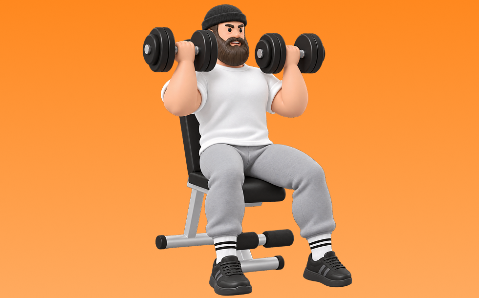

アーノルドプレス

アーノルドプレスとは、ダンベルを使って「押す」動作で肩（三角筋）、腕（上腕三頭筋）を鍛える種目です。可動域が広く、左右のバランスを整えやすいのが特徴で、反動を抑えてコントロールしながら反復します。肩の厚みづくりとオーバーヘッドの押す力の向上が期待できます。
- 対象部位
- 肩
- 器具
- ダンベル
- 記録形式
- 重量・回数
- 別名
- アーノルド
YouTube動画
-
アーノルドプレス（Arnold Press）のやり方と基本フォーム
-
【初心者】アーノルドプレスのやり方 | ダンベルを使った肩の筋トレ種目【ビーレジェンド プロテイン】
-
【どのフォームが正しい？】肩トレで人気のショルダープレス、サイドレイズで気になるポイントを全部解説します【筋トレ】
-
【肩をデカくする】アーノルドプレスのやり方を教えます。
-
【肩トレ】アーノルドプレスのやり方
-
アーノルドプレスでこの動きをしてる人は必ず聞いてください。
-
【筋トレ】アーノルドプレスの正しいやり方
-
【アーノルドプレスを詳しく解説！】#92
-
【初心者向け】最強の肩を作る！アーノルドプレスを解説します【筋トレ】奈良県パーソナルジム
-
【肩トレ】胸と肩のメリハリを作る「アーノルドプレス」をIFBB PRO寺島遼が徹底解説！
-
【肩トレ】ダンベルでハリのある肩を作る！最も効果的な筋トレメニュー5選|サイド・フロント・リア
-
アーノルドプレスのやり方！フォームのコツやショルダープレスとの効果の違いを解説
-
【フリーウェイトトレーニング】No.35 肩～アーノルドプレス～
-
ダンベルショルダープレスのやり方・フォーム | 「肩関節や肘が痛い」「椅子の角度が不明」初心者向け動作説明です！
-
【肩トレ】軽いダンベルだけで肩に効く！初心者にもオススメの基本３種目を解説【筋トレ】
-
これをやらないとデカくならない！肩トレ最強種目を徹底解説！！
-
肩の筋肉を効率よく鍛える【アーノルドプレス】 のやり方〜ダンベルを使って手軽に筋トレ〜
-
アーノルドプレスのコツを伝授します
-
【アーノルドプレス】肩に強烈に効かせるコツ〜ショルダープレスとの違いまで解説
-
【肩トレ】1年で劇的に肩がでかくなった最強種目を教えます。ガチ解説付き
-
アーノルドプレス｜ダンベルを使った筋トレ【公式】
-
【筋トレ】ダンベルショルダープレスとアーノルドプレスの効果の違いと使い分け方 | ボディビルチャンピオンが解説【ビーレジェンド プロテイン】
-
【筋トレ基本】ダンベルアーノルドプレス dumbbell arnold press
-
アーノルドプレスのやり方 肩（三角筋）を鍛える！ - 筋トレ講座
-
【北島式完コピ】丸い肩をつくる！アーノルドプレス大解説【北島先生切り抜き】
-
三角筋の筋肥大に最も良い種目は？【三角筋のティアリスト】
-
肩全体に効きまくる！7分間ダンベルトレーニング
YouTubeショート
-
アーノルドプレス間違ってる人多い#shorts
-
正しいショルダープレス4つのポイント #筋トレ
-
筋トレ初心者向けアーノルドプレスやり方#肩トレ
-
360度 丸い肩を作る アーノルドプレス
-
【ダンベル】肩トレ3選 #筋トレ
-
見逃すな！ショルダープレスの鉄則！ #肩トレ #自宅トレーニング #ショルダープレス
-
めっちゃ肩がデカくなった今やってるメニュー！#shorts
-
アーノルドプレスって何がいいの？これ#筋トレ #shorts
-
【徹底解説】アーノルドプレスフォーム維持のコツ
-
効かせるショルダープレス
-
持田選手の肩を痛めないためのショルダープレス。必見です。 #トレーニング #筋トレ #volix #fitness #workout #肩トレ
-
先生!肩をデカくするおすすめの筋トレメニューは？ ＃Shorts #肩トレ
-
刃牙の肩を作る筋トレ！自宅で出来るアーノルドプレスの方法ッ！#shorts
-
正しいサイドレイズ4つのポイント #筋トレ
-
カネキン式ダンベルショルダープレスのコツ#shorts #筋トレ #肩トレ
-
トレーナーが教える筋トレ「アーノルドプレス」 【肩/中級】
-
最短で肩をデカく！！アーノルドプレス解説🔥#肩トレ#筋トレ#マッチョ#アーノルドプレス
-
マシンを使ったショルダープレスのコツ
-
アーノルドプレス22.5kg肩の種目は軽めの重量でフォームを意識しようね#筋トレ＃肩＃三角筋#フォーム
-
アーノルドプレスのやり方
-
今日の肩トレ！#筋トレ大学生 #筋トレ男子 #gymmotivation #fitnessmotivation
-
The PERFECT Arnold Press
-
【肩トレ】アーノルドプレスのやり方
動作方法
- 安定した姿勢を作り、肩と体幹を固定する
- 狙う部位を意識して、反動を使わずに押す
- 可動域を保ちながら、ゆっくり元に戻す
動作ポイント
- 肩をすくめない
- 手首を寝かせすぎない
- 反動を使いすぎない
ワンポイントアドバイス
- 重量よりも肩の軌道を安定させる
- 首まわりの力みを減らして行う
目的別回数設定
目的や体力に応じた一般的な目安です。無理のない範囲で調整してください。
- 筋力アップ
- 1〜5回
- 筋肥大
- 6〜12回
- 持久力アップ
- 13〜20回
YouTube動画について
動画はYouTubeの公開情報をもとに表示しています。内容は投稿者によるもので、Biggrによる監修ではありません。
アプリを入手
筋トレやトレーニングの記録はBiggrにお任せください。今すぐ無料で使い始められます。